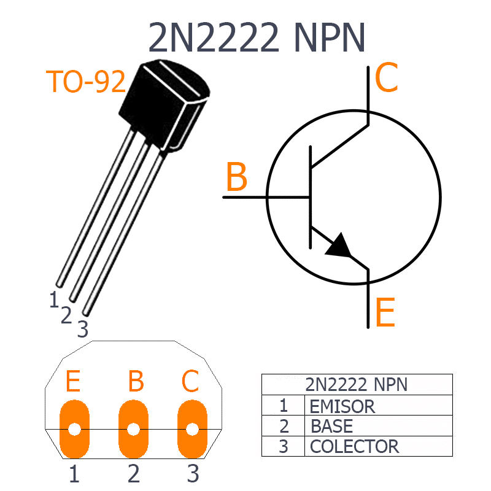

Transistores PNP:

El transistor de unión bipolar (del inglés bipolar junction transistor, o sus siglas BJT) es un dispositivo electrónico de estado sólido consistente en dos uniones PN muy cercanas entre sí, que permite aumentar la corriente y disminuir el voltaje; además de controlar el paso de la corriente a través de sus terminales. La denominación de bipolar se debe a que conduce tiene lugar gracias al desplazamiento coordinado de dos polaridades (huecos positivos y electrones negativos), y son de gran utilidad en gran número de aplicaciones; pero tiene ciertas inconvenientes en relación al impedancia de entrada bastante baja. Los transistores bipolares son los transistores más usados en circuitos electrónicos amplifica aunque también en algunas aplicaciones de electrónica digital, como la tecnología TTL o BiCMOS. Un transistor de unión bipolar está formado por dos Uniones PN en un solo cristal semiconductor, separados por una región muy estrecha. De esta manera quedan formadas trea regiones:
- Emisor, que se diferencia de las otras dos por estar fuertemente dopada, comportándose como un metal.
- Base, la intermedia, muy estrecha, que separa el emisor del colector.
- Colector, de extensión mucho mayor.